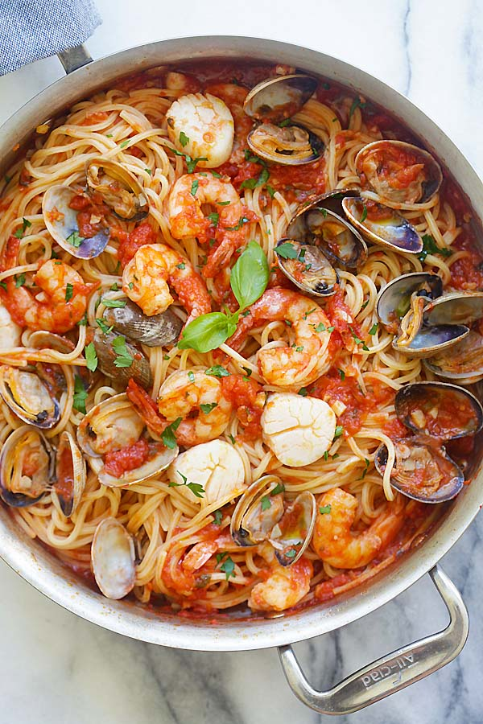

Seafood Pasta with Tomato Sauce

Description
This is a delicious, easy to make pasta recipe that will be ready in under 20 minutes.
Ingredients
- Linguine (500g)
- Garlic (2 cloves)
- Tomato Sauce (2 cans)
- Any Seafood of choice (350g)
Steps
- Cook the linguine in boiling water according to packet instructions.
- Sautee the seafood in a pan with olive oil and salt, then remove from pan and leave to rest.
- Add more olive oil into the pan, then add garlic and lightly sautee until garlic is light golden brown.
- Add in the tomato sauce, some pasta water from the linguine, and salt to taste.
- Add in the cooked seafood, stir and turn off the pan.
- Finally, add in the cooked linguine, mix, and serve.